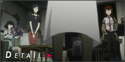
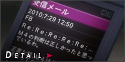

#01 开始与终结的序章
自称是“凤凰院凶真”的中二病大学生冈部，为了修学分的他与青梅竹马真由理一同去听中钵博士召开的时间机器宣讲会。会后听到惨叫的冈部看到了躺在血泊之中的红莉栖，在他发出“红莉栖遇刺”的短信给好友桥田后立即感到了不同寻常的异样感，他所在的世界似乎发生了某些微妙的改变。
.png)
舞台是2010年夏的秋叶原。
无法摆脱中二病的大学生冈部伦太郎，成立了“未来道具研究所”，
每天都生产出用途不明的发明。但是，某日，偶然间发明出
可以把电子讯息传送过去的时间机器。
抑制不住对世纪发明的兴奋，纯粹由于感兴趣而不断对过去进行干涉。
结果，席卷世界的大悲剧降临在冈部等人的身上……
为了避免悲剧的发生，冈部的孤独的战斗开始了。
而他到底能否克服命运呢！？
#02 时空跳跃的偏执狂
出现在自己面前的红莉栖让冈部非常吃惊，而桥田却觉得冈部的妄想症犯了，在讲座上天才少女红莉栖彻底击败了冈部的时间机器理论。彻夜调查提托事件的冈部却没有找到结果，这件发生在2000年轰动一时的话题仿佛从来都没有发生过，当他用电话微波炉（暂定）做香蕉实验时奇怪的事情发生了。

#03 平行时空的偏执狂
突然到来的红莉栖对于香蕉实验也产生了疑问，冈部则顺势邀请她加入LAB，在他们梳理思路后重新实验，而实验的结果让冈部确信了时间机器的理论，看到这些的红莉栖跑了出去。时间旅行的关键是小型黑洞，一直在做此项研究的SERN对外发布小型黑洞无法实现，为了明白真相的冈部让桥田黑进了SERN的系统。
#04 空理彷徨的会面
黑进SERN系统后他们看到了一份程序，为了破解这份程序语言他们必须先得到老式的电脑IBN5100，冈部所说的毫无边际的话让红莉栖一时无法相信，在核实IBN5100的确可以破解特殊程序语言后红莉栖找到了冈部。冈部在留未穗哪里得知漆原的神社供奉着IBN5100，得到了这台电脑的他们将会发掘出怎样的秘密？
#05 电荷冲突的会面
在桥田的改装下IBN5100终于可以运作，被破解的程序语言有着让他们吃惊的事实，之前40年来SERN一直在做关于时间机器的实验，甚至还将这种实验运用在了人类身上，而死者的样子就像是冈部他们所作的香蕉实验一样。看到这些的冈部不禁大笑起来，他想要抢在SERN之前制作出时间机器。
#06 蝶翼的分歧
铃羽不知为何会对红莉栖露出敌意，当冈部问及时铃羽却说和红莉栖过去并没有什么矛盾。香蕉实验再次成功，红莉栖在实验室发出了第三封邮件，刚刚还为实验成功而喜悦不已的冈部却又担心SERN会不会对知道了秘密的他们下手。对IBN5100执着的萌郁找到了冈部，知道了秘密的她也成为了lab的成员。

#07 断层的分歧
为了测试改变历史的方法，冈部发了封邮件给之前的自己，上面写着彩票的中奖号码，虽然有些犹豫但冈部还是按下了发送键。时空开始了摇晃，反应过来的冈部紧盯着自己的手机，而同伴们却完全没有试验的记忆，现在他所处的世界又发生了微妙的改变，他再次进入了平行世界。

#08 梦幻的自平衡
为了确认自己能够在世界线移动后维持记忆，冈部决定再次移动世界线，但当他向桥田发送第6封D-mail后世界线却没有移动。在萌郁的强烈要求下冈部允许她给4天前的自己发短信不要换手机，世界线移动后众人都失去了对萌郁的记忆，听到他们谈话的琉华也想给过去的母亲发短信，他想要从男生变成女生
#09 幻相的自平衡
发送过D-mail的琉华并没有看出什么变化，但冈部却发现了许多异样，在这个世界线里IBN5100根本就没有被找到，而本被大家忘记的萌郁又回到了记忆里，在菲利斯发送第9封D-mail到10年前后世界发生了更大的改变，菲利斯死去的父亲出现，而整个秋叶原从萌文化街变成了电器街，冈部意识到他们可能做了无法挽回的事情。
#10 相生的自平衡
虽然世界发生了变化，但从结果来看人际关系依旧维持正常，在冈部说琉华子是男生时遭到了大家的鄙夷，亲测之后才发现琉华子已经变为了女生。冈部得知铃羽为了寻找父亲而参加了“时间机器线下聚会”，并听从劝告没有去跟踪铃羽，在冈部想要改变过去替铃羽找回父亲时却收到了“我在看着你哦”的讯息，里面还附上了诡异的照片。

#11 时空境界的信条
一楼42寸电视偶然起到了飘升机的作用，这使得D-mial的发送得以实现，明白了这些的红莉栖想到了时间跳跃的原理，将自己的意识送回过去变为可能。听到铃羽说红莉栖与SERN是一伙的后冈部并没有过于在意，而红莉栖向冈部吐露了心声。在外购物的冈部突然接到了恐吓的短信和照片，桥田也发现SERN已经反向访问了他们。

#12 静止界限的信条
时间跳跃的机器已经成功完成，但之前发生的事情让冈部不想再以身试险，冈部决定将时间机器发表交由相关部门测试。Lab准备的时间跳跃机器庆祝会上大家都玩得很开心，当听到Lab与SERN的光缆连接在一起后神情慌张的铃羽跑了出去，随后萌郁带着SERN的武装分子闯入Lab想要接收时间机器，并且向真由理开枪。
#13 形而上的坏死
启动了一楼电视的铃羽赶了回来，瞬间击败了武装分子的她与萌郁对峙，红莉栖和冈部趁机发动了时间跳跃机器，记忆的过往在冈部的脑内播放，当他反应过来时真的回到了当天的下午。拼尽全力的他还是无法阻止真由理的死亡，再次返回当天下午后改变了处理事态的方法，但真由理却又以不同的形式死亡。
#14 形而下的坏死
无数次返回当天下午的冈部依旧无法阻止真由理的死亡，既便与萌郁无关真由理还是会以其他形式死亡，束手无策的冈部陷入了绝望，仿佛全世界都串通一气想要杀害真由理一般。无奈的冈部向红莉栖求助，再次回到时间跳跃机器刚刚完成的时候，让红莉栖相信自己来自未来后两人一起寻找致使真由理走向死亡的原因，听到这些的铃羽走了进来。
#15 亡环上的坏死
铃羽就是冈部一直联系的提托，而她来自被SERN统治的2036年。绝望的未来让冈部等人非常吃惊，而想要解救真由理就要从根本上解决问题，那就是消除冈部发出的第一封D-mail，为此铃羽必须乘坐时光机器前往1975年找到IBN5100。再次使用时间跳跃回溯到最大限度后冈部让桥田展开了维修时光机器的工作，而其他人则帮助铃羽寻找父亲。
#16 不可逆的坏死
在大家调查铃羽父亲的这段时间里，桥田终于在13号下午修好了时间机器，而根据真由理的推测铃羽的父亲就是桥田。短暂的告别后铃羽乘坐时光机器返回到1975年，而期待的冈部等人收到的却是铃羽的遗书，行动失败致使世界线没有转移。明白失败原因的冈部发D-mail给2010年8月9号的自己别去跟踪铃羽，世界线终于开始了转移。
#17 虚像歪曲的复杂
世界线的改变只是让真由理的死亡日期从13号推迟到14号，死亡的事实依旧无法改变，时间跳跃到13号下午的冈部再次和红莉栖商议，他们得出的结论是必须消除所有的D-mail，让世界线回到最初的状态。找到菲利斯的冈部叙述了事情的经过，模糊存在这其他世界线记忆的菲利斯告诉了冈部自己所发D-mail的内容，她改变了父亲死去的事实。
#18 自己相似的雌雄同体
接下来要消除的就是琉华发送的D-mail，但当冈部说出琉华在其他世界线里是男生时却引起了尴尬的局面，在冈部一筹莫展的时候收到了琉华的信息。存在其他世界线模糊记忆的琉华相信了冈部的话，但在消除D-mail变回男生前琉华希望与冈部正式交往一天，因为在变为男生后就意味着要永久的封闭对冈部的爱慕。
#19 无限连锁的细胞凋亡
不断进行时间跳跃的冈部明白，如果没有把所有的D-mail消除真由理的死亡结果便不会改变，而下一封要消除的便是萌郁所发的D-mail。红莉栖陪着真由理确认死亡的时间，而前去寻找萌郁的冈部却发现对方已经自杀，在确定了真由理死亡时间后冈部再次进行时间跳跃，回到了萌郁自杀前的他抢到了对方的手机，但发出“不要换手机”的信息后世界线却没有改变。
#20 怨嗟断绝的凋亡
无功而返的冈部再次与红莉栖商议，在红莉栖的提一下冈部决定找出蛊惑萌郁的FB，想要知道真相的萌郁选择与冈部同行。跟随着被取走的IBN5100冈部终于发现，他们的房东Mr.布朗竟然就是FB，事情败露的Mr.布朗在射杀萌郁后自杀，用Mr.布朗的手机发送信息给之前的萌郁不要去寻找IBN5100后世界线终于得以改变，现在只需要消除第一封D-mail便会回到β世界线，但冈部却突然反应过来这将会造成红莉栖的死亡。

#21 存在了解的溶解
真由理和红莉栖对于冈部来说都是非常重要的存在，回到β世界线真由理就会获救但红莉栖却逃脱不了遇刺的结果，想要与命运抗争的冈部依旧改变不了什么，没有消除第一封D-mail的他又一次目睹了真由理的死亡。再次进行时间跳跃的他依旧一筹莫展，在红莉栖的逼问下他终于说出了真相，两人的讨论毫无进展，而冈部在这时接到了真由理的电话。
#22 存在了解的溶解
无数次目睹真由理死亡的冈部已经麻木，但他依旧不能接受牺牲红莉栖的结果，想要再次进行时间跳跃的冈部被红莉栖阻止，这样下去只会让悲痛加深。相互示爱的两人在彼此心中都留有深刻的记忆，在红莉栖的说服下冈部终于下定决心回到β世界线，在桥田入侵SERN系统消除第一封D-mail后回归到了β世界线，而这真是冈部所期待的世界？
#23 境界面上的命运石之门
回归到β世界线的冈部等人又遇到了乘坐时光机器而来的铃羽，为了避免第三次世界大战他们就必须拯救红莉栖，而经历了无数次时间跳跃的冈部却心存疑虑。真由理的鼓励让冈部下定了决心，与铃羽一起回到红莉栖遇害当天的他竟然在混乱中误杀了红莉栖，就在他面临崩溃的时候收到了来自15年后的自己发来的视频信息。
#24 终结与开始的序章
之前的失败是为了成功的准备，根据未来的提示冈部终于找到了拯救红莉栖的方法，那就是在不改变过去既定事实的基础上欺骗自己，欺骗世界。再次回到事发当天的他成功的实施了计划，他用自己的鲜血营造出红莉栖遇害假象，而中钵博士所抢的论文也被烧毁，世界终于进入了他所期待的命运石之门。
SPECIAL 横行跋扈的离家漫游廦
成功进入了命运石之门的世界线后一切皆大欢喜，菲利斯被邀请参加在美国举行的雷NET大赛，冈部等人决定一同前往。因为中二病的缘故冈部在入关的时候遇到了很多麻烦，前来接他们的是忙完工作的红莉栖，大家又回到了在Lab时的氛围。根据冈部的描述红莉栖很在意其他世界线里两人的感情，而在这个世界线里他们又将要如何面对彼此？